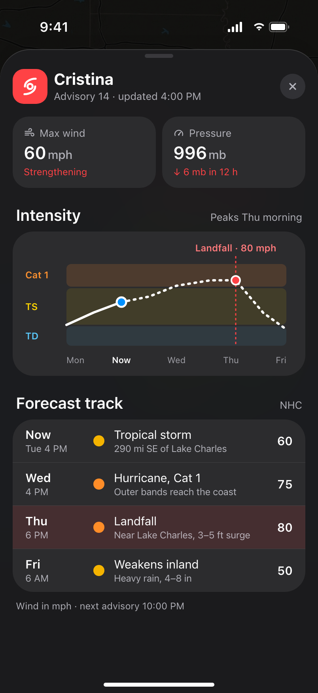
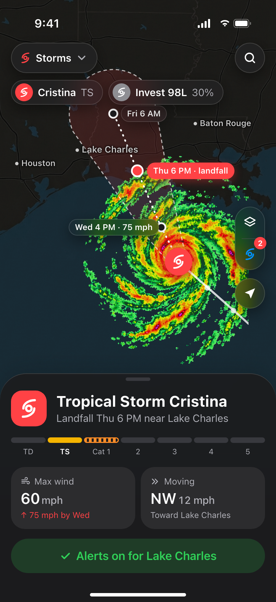
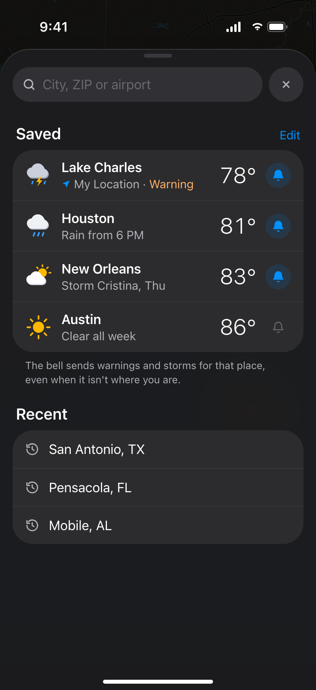
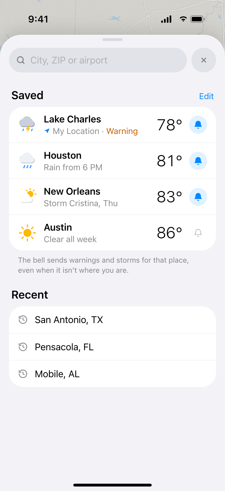
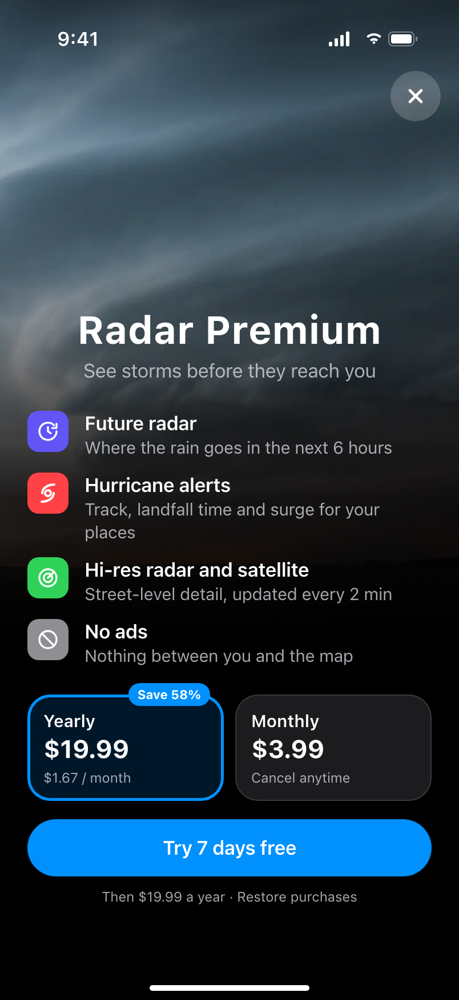

How do you want to read the case?
Radar is an iOS storm radar and hurricane tracker. The map is the app: hurricanes are a layer of the same map, and everything else opens over it as a sheet. A storm shows its cone, its track and when it makes landfall; one tap sets an alert. Warnings say until when, what to expect and what to do. Saved places get the same alerts, so you can look out for family elsewhere. Premium appears where the need already is. Two of my ideas failed in testing: hurricanes higher on the main screen and a simplified forecast.
Walkthrough
One storm, start to finish
- Warning
- Hurricane
- Alerts
- Premium
Tuesday afternoon in Lake Charles, Louisiana: a thunderstorm now, a hurricane due on Thursday. One person goes from the lock screen to the warning, the map, the storm, alerts for their family, and Premium.
01 · Context
A radar shows where. People need when.
- Storm country
- When, how bad, what to do
Radar apps are built around the map: where the rain is, where the storm is. For people on the Gulf Coast that is half the answer. In storm season they need to know when it reaches them, how strong it will be and what to do now.
Radar covers the whole picture: live and future radar, hurricane tracking, severe weather warnings, hourly and daily forecasts, and alerts for the places you care about.
02 · Map
The map is the app
- One map
- Radar and Storms layers
- Sheets, not screens
A radar is read at a glance, so the map takes the whole screen. Everything else floats above it on glass: the layer picker and search at the top, the legend, map tools on the right, and a timeline with the past hour solid and the next hour dashed.
Nothing takes you away from the map. Your place, saved places and map layers open as sheets over it; close one and you are back. Hurricanes are a layer, not a screen: switch the picker from Radar to Storms, the map glides to the Gulf, and the card at the bottom turns into the storm.
03 · Hurricanes
When it makes landfall, and how strong
- Cone and track
- Category scale
- Alert in one tap
On the coast the question isn't where the storm is, but when it reaches you and how strong it will be. The map shows the cone, the forecast track with labelled points, and the landfall point in red with its time.
The storm card puts the category on a scale: tropical storm now, Category 1 by Wednesday. Pull it up for intensity over time and the track as a list: when, what, where, how strong. “Alert me before it arrives” sets an alert in one tap.

Storm detail
Alert on04 · Warnings
A warning you can read in five seconds
- Until when
- What to expect
- What to do
Official warnings arrive as long uppercase bulletins. People need three things from them: how long it lasts, what is coming and what to do now. The notification already says what, where and until when, and opens the warning: time left, what to expect in three numbers, the steps, and the full text one tap away.
The forecast for a place follows the same order: the warning, the next hour, hourly with the chance of rain, ten days.
05 · Places
Alerts for the people you worry about
- Saved places
- An alert per place
- Search in one sheet
A storm matters not only where you are. Every saved place has its own bell, so warnings and storm alerts for your parents' city reach you too. Search, saved places and recent searches share one sheet.

Dark
Light06 · Premium
Premium where the need already is
- Future radar
- At the moment of need
- Sell the outcome
Premium used to live in a banner in Settings: hurricane tracker, hi-res radar and satellite maps, a 14-day forecast. Now it appears when someone wants more: Future radar, the rain for the next six hours, sits in the layer sheet with a PRO label. The paywall leads with the outcome, “see storms before they reach you”, and a free week.

Paywall07 · Honest part
What didn't work
- Hurricanes higher
- Simplified forecast
Hurricanes higher up. I moved hurricane information higher on the main screen, sure it was what people came for. Testing didn't back it up.
A simplified forecast. I proposed showing the weather in large blocks of the day. Research said people wanted a full hourly forecast for the next 24 hours, so that is what we built.
08 · Result
What came next
- Trust tested
- The next product
Radar did what it was built for: people used it and trusted what it told them. The research around it pointed to what they cared about even more than the forecast: how the weather would make them feel. That idea later grew into a separate product, WeatherWell.
Scale
Radar, screen by screen
- 14 screens
- Light and dark
- Open full size
The story in dark, as it plays above, and the main screens in light. Open any of them full size.